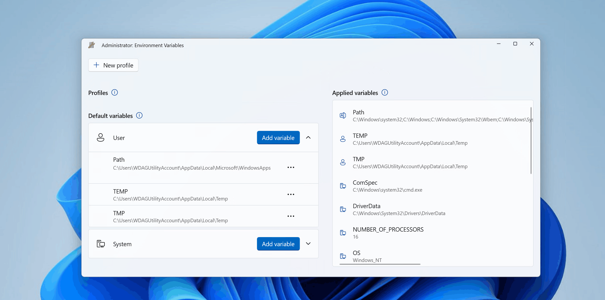
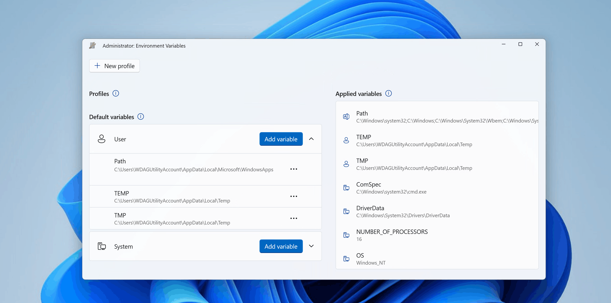
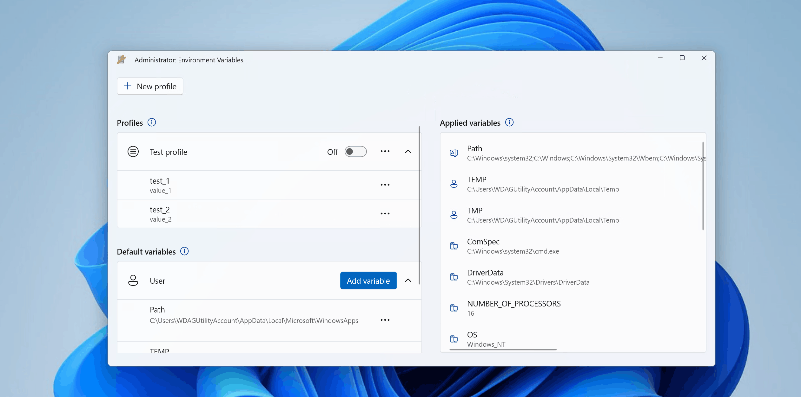

Environment Variables
PowerToys Environment Variables offers an easy and convenient way to manage Windows environment variables. This utility allows you to create profiles for managing a set of variables together, streamlining your development workflow. Profile variables have precedence over User and System variables.
Applying the profile adds variables to User environment variables in the background. When a profile is applied, if there is an existing User variable with the same name, a backup variable is created in User variables which will be reverted to the original value on profile un-apply. The Applied variables list shows the current state of the environment, respecting the order of evaluation of environment variables (Profile > User > System). The Evaluated Path variable value is shown at the top of the list.

Edit/Remove variable
To edit or remove a variable (profile, User or System), select the more button (•••) on the desired variable:

Add profile
To add a new profile:
- Select New profile
- Enter profile name
- Set Enabled toggle to On to apply the profile right after creation
- Select Add variable to add variables to profile (either new variable or existing User/System variables)
- Select Save

To edit or remove a profile, select the more button (•••) on the desired profile.
Apply profile
To apply a profile, set the profile toggle to On. Only one profile can be applied at a time. The Applied variables list will show applied profile variables at the top (below Path variable):

Settings
From the settings, the following options can be configured:
| Setting | Description |
|---|---|
| Open as administrator | Allow management of System variables. If off, only profile and User variables can be modified. Environment Variables is opened as administrator by default. |
Install PowerToys
This utility is part of the Microsoft PowerToys utilities for power users. It provides a set of useful utilities to tune and streamline your Windows experience for greater productivity. To install PowerToys, see Installing PowerToys.